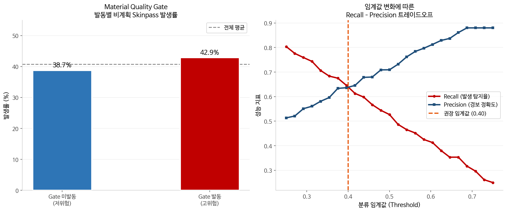

피처별 비계획 공정 발생 분포

주요 변수 분포 및 이상치 확인
핵심 발견: 강종·두께·압하율 조합이 비계획 발생 확률에 영향을 줬지만, 단순 임계값 하나로는 구분되지 않았다. 게다가 클래스 불균형(40.8%) 때문에 정확도는 거의 의미가 없었다.
| 모델 | Precision | Recall | F1 |
|---|---|---|---|
| LightGBM ★ | 0.71 | 0.83 | 0.77 |
| Logistic Reg. | 0.68 | 0.74 | 0.71 |
| Random Forest | 0.73 | 0.71 | 0.72 |
| XGBoost | 0.70 | 0.78 | 0.74 |
SMOTE 적용 근거
비계획 클래스 비율 40.8%를 보정하기 위해 훈련 데이터에 오버샘플링을 적용했다. 이 프로젝트에서는 정확도보다 Recall이 중요했고, 비계획 공정을 하나라도 더 잡아내는 쪽이 오탐보다 더 큰 가치가 있었다.
LightGBM Recall 0.83 — 비계획 발생 코일 10개 중 약 8개 사전 탐지

혼동행렬 / 모델 성능

SHAP — 피처 기여도

혼동행렬 — LightGBM (SMOTE 적용)
Recall (핵심 지표)
0.83
비계획 공정 탐지율. 전체 비계획 케이스 83% 사전 포착
Precision
0.71
경보 중 71%가 실제 비계획으로, 과탐은 관리 가능한 수준이었다
F1-Score
0.77
Precision·Recall 조화 평균 — 균형 지표
SMOTE 효과
SMOTE 적용 전 Recall은 0.61이었고, 적용 후에는 0.83까지 올라갔다 (+22%p).